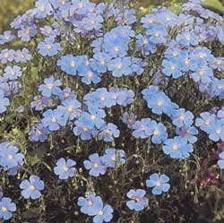
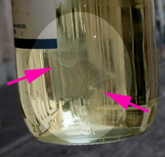
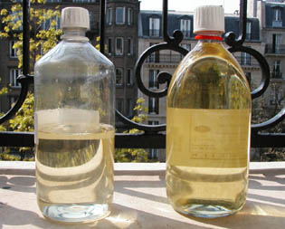
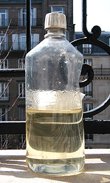
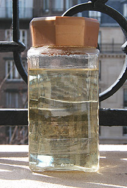

L'huile
de lin
|

Le lin est une jolie plante herbacée - une vivace à la santé fragile
dont il existe quelques variétés annuelles - donnant de jolies fleurs bleues
très légères suspendues au bout de longues tiges, frissonnant et voletant au
moindre vent. Un champ de lin
en fleur - de juin à septembre selon les variétés - est d'une beauté
aérienne.
Le genre humain doit à cette petite plante de trente à
soixante centimètres de haut une impressionnante quantité de
produits : huiles à peindre, patines, huile de protection, graines et farines à
usage pharmaceutique, textiles vestimentaires, toiles à peindre, papiers chiffon
de haute qualité,
jolis bouquets et même le mot ligne (du latin linea). Rudolf
Diesel, inventeur du moteur du même nom, testa même avec succès l'huile de lin
comme carburant.
|
Sommaire
Fabrication,
provenance, formulation
- Formulation chimique
Caractéristiques
Tendances
de l'huile de lin, implications
Qualité
Utilisations
habituelles de l'huile de lin en peinture, problèmes rencontrés
couramment et solutions
Différents
types d'huiles de lin disponibles dans le commerce
:
-
Huile
de lin décolorée
-
Huile
de lin clarifiée
-
Autres
huiles de lin et autres applications |
Elle provient de l'Asie perso-syro-anatolienne ou du Caucase et est cultivée depuis des milliers
d'années en Assyrie et en Égypte, mais son emploi comme huile à peindre
remonte seulement au XVème siècle (lire l'article sur les
huiles).
Les variétés acclimatées aux climats du Nord ("huiles de pays"),
à fibres plus longues, donnent aujourd'hui surtout des textiles (lire
l'article sur les fibres des toiles à peindre).
Fabrication,
provenance, formulation
Les huiles les plus réputées pour la peinture proviendraient de La Plata et Bombay,
cependant la
qualité des huiles à peindre ne dépend pas seulement de la provenance, mais aussi du mode d'extraction. Le procédé
classique consisterait à sécher, puis griller légèrement les graines avant
compression. Le procédé actuel serait souvent basé sur la vapeur, qui permet d'extraire
davantage d'huile. En revanche la siccativité de l'huile produite serait
plus faible. (informations non confirmées mais provenant de l'ouvrage de
référence de Xavier de
Langlais, La technique de la peinture à l'huile)
Certaines entreprises proposent une huile de lin dont la provenance est exactement celle qui était à
la disposition des anciens maîtres : le Nord de la France et la Pologne, zones
de lins à fibres. Le pressage est entièrement réalisé à froid. C'est une
autre logique. Le produit obtenu serait "souple et dur". Il est assez
coûteux. Nous ne
l'avons pas testé.
Enfin sont apparues d'autres sources d'approvisionnement : le Maroc et
l'Argentine. Nous manquons d'informations à leur sujet. Merci de nous
faire part de vos expérience des huiles des différents lieux de production
et des huiles "à l'ancienne".
Formulation
chimique
Important : lire en premier l'article du glossaire consacré à l'acide linoléique,
l'acide linolénique et les ALC
Le principal constituant, le dénominateur commun, de ces huiles de lin est la
linoléine, soit l'ensemble des esters glycériques
de l'acide linoléique (acide gras diéthylénique)
et de l'acide linolénique (acide gras triéthylénique).
CH2OH-CHOH-CH2OH
[glycérine]
- CH3-CH2-(CH=CH-CH2)3-(CH2)6-COOH
[acide alpha linolénique]
CH2OH-CHOH-CH2OH
[glycérine]
- CH3-(CH2)4-(CH=CH-CH2)2-(CH2)6-COOH
[acide linoléique]
En fait, l'huile de lin contient d'autres esters minoritaires
non négligeables, notamment ceux de
l'acide oléique. Tous ces composants sont très souvent présents dans d'autres
huiles, mais celle du lin concentre une quantité particulièrement importante d'esters
de l'acide alpha linolénique alors que l'acide oléique, assez saturé, est très banal
et que l'acide linoléique, déjà plus intéressant, est présent dans d'autres
huiles à peindre qui ne sont pas de mauvaise qualité mais sont bien
moins siccatives.
Voir aussi Formation des triglycérides in La saponification
et l'estérification
Qu'est-ce qui caractérise l'huile de lin par rapport aux autres huiles à
peindre ?
* Parmi les huiles à peindre, c'est celle qui siccative le plus rapidement (on dit plutôt "siccativer"
que "sécher", pour des raisons exposées dans l'article
consacré aux huiles) bien qu'elle soit concurrencée par
l'huile de Canton et quelques
autres très insaturées, mais
celles-ci ne sont pas véritablement considérées comme des huiles à peindre.

* Une fois solidifiée, c'est la plus résistante et la plus
souple.
* Elle adhère fort bien à différents métaux, dont l'or et certains fers
(lire Exemple de la Tour Eiffel in
enduction des métaux pour la peinture). Que serait la Tour Eiffel
sans l'huile de lin ? Sûrement un fatras de poutres rougies non par le
soleil couchant comme sur la photo ci-contre mais par une rouille qui
l'aurait dévorée depuis longtemps. L'extrême résistance de cette huile et
ses capacités d'adhérence sont des caractéristiques concrètes de tout
premier plan.
Signalons également qu'elle peut servir de colle pour divers matériaux
légers. Les feuilles métalliques
notamment.
* C'est celle pour laquelle il existe le
plus de "recettes" (cuisson, addition de produits siccatifs ou autres) et
de procédés éprouvés depuis cinq siècles, bien que l'huile d'oeillette et
l'huile de noix la suivent de près.
* Elle jaunit en l'absence de lumière mais s'éclaircit à nouveau en présence d'une
ambiance claire. Nous y reviendrons.
Ces vertus en font la plus recherchée, en tant que liant, pour les
amateurs comme pour les professionnels (sauf exigences spécifiques). Sa plus
grande concurrente est l'huile d'oeillette qui a aussi ses avantages et ses lettres de noblesse,
mais n'a pas sa siccativité.
Densité
: 0,930 à 0,935. Point de congélation - 29°.
Point d'ébullition : 387°.
(données Xavier de Langlais)
Diluants
: essences non aromatiques.
Dissolvants
: alcool à brûler (dissolution "molle"
mais relativement peu dangereuse pour un emploi ponctuel maîtrisé),
ammoniaque et autres
alcalis fort (dissolution forte, dangers importants
pour le vivant), hydrocarbures
benzéniques (dissolution forte, dangers extrêmes pour le vivant).
Nocivité : faible. En cas d'ingestion cette huile
n'est guère bonne mais son effet n'est que celui d'un laxatif (information
Reptox). Comme avec les autres huiles y
compris alimentaires, le contact avec les yeux n'est pas particulièrement
conseillé. Elle n'est pas non plus un allergène notoire, même si ce cas ne
relève pas de l'impossible.
Il faut par contre souligner qu'elle est
inflammable, comme la plupart des huiles. Chaude ou bouillante elle peut
évidemment provoquer des lésions. Ne jamais jeter de l'eau sur une huile en feu
(risques de projection et de propagation).
Tendances de l'huile de lin, implications
La
peinture en tubes (invention du XIXème siècle) requiert une
insensibilité maximale à l'absence prolongée d'éclairage ainsi qu'une siccativité
compatible avec les exigences du stockage.
Or, l'huile de lin a une tendance :
* Comme nous l'avons dit, elle jaunit lorsque la lumière manque mais retrouve son éclat et sa
neutralité quand on la replace à la lumière. Une opinion encore très
répandue
omet totalement ce dernier point pourtant crucial : l'huile de lin fraîche
ou sèche réagit à la lumière de manière généralement réversible.
Certaines "traditions" en relation avec ce sujet sont évoquées dans
l'article consacré à l'huile d'oeillette (Critique
d'une tradition de broyage).
Dans le cas des peintures en tubes seulement, il est tout à fait logique que
la plupart des fabricants comme des
acheteurs souhaitent que la pâte non exposée à la lumière pendant des
semaines, des mois ou des années, soit utilisable telle quelle
à la sortie du tube, juste au moment de peindre. L'huile de lin ne
suscite véritablement des réserves que dans ce cas précis du conditionnement en tube et dans
celui où le peintre sait d'avance que le tableau sera durablement conservée
en milieu obscur.
Même si l'huile d'oeillette, l'huile de carthame
et quelques autres ne doivent pas être dénigrées, nous devons signaler que rares
sont les fabricants qui ne se sont pas
lancés, à tort ou à raison, dans une entreprise de bannissement de l'huile de lin.
C'est dommage car l'emploi d'autres huiles peut poser des problèmes
* de siccativité : si le produit doit effectivement pouvoir supporter le
stockage, qu'en est-il de l'allongement des temps de séchage des tableaux ?
L'huile d'oeillette,
l'huile de
carthame, l'huile
de tournesol, l'huile de soja
sont d'excellentes huiles à peindre (comme liants majeurs ou mineurs selon
les cas car les mélanges sont possibles), mais elles nécessitent une autre approche. Pourtant, soyons
juste, il faut reconnaître que la plupart des fabricants traitent leurs
huiles avec assez de soin pour que la différence de siccativité avec l'huile de lin soit
finalement moins sensible que l'on ne pourrait s'y attendre.
* de jeunesse : de nouvelles huiles (carthame,
soja) sont apparues sans que l'on connaisse
véritablement leurs propriétés de conservation à long terme. Ne jetons
pas la pierre aux fabricants : leurs recherches constituent des apports
techniques importants pour le procédé à l'huile.
Voir à ce sujet l'article Séparer ou non
liants et pigments.
Qualité
Charge électrochimique
Qu'elle soit employée dans le cadre d'un travail artistique, décoratif ou
simplement protecteur, une huile de lin ne devrait jamais être acide.
Une démarche s'impose : le test au papier
tournesol.
Ceci n'est pas un détail insignifiant : une huile acide risquerait de dégrader à court
ou moyen terme certains supports, certains pigments et certains médiums.
Netteté et coloration
La netteté d'une huile est importante. Un produit tel que celui-ci, vendu
comme huile de lin décolorée en région parisienne en 2006 peut susciter
questionnement :

Pourquoi cette sorte de "nuage de fumée" atypique dans un produit neuf où
aucun objet n'a trempé ? Une substance étrangère, une dégradation ou bien une
particularité du traitement est évidente. Dans ce cas précis, on constate une
autre anomalie : une teinte un peu "jaune citron" (peu sensible à l'image), mais
on ne peut en tirer aucune conclusion.
Ni paranoïa ni prise de risque
Il faut le dire, certaines anomalies - notamment de coloration - ne
signifient pas nécessairement qu'un produit est de mauvaise qualité. Mais il
vaut mieux effectuer des vérifications (notamment olfactives) et demander
au marchand des explications aussi claires que le produit doit l'être car
celui-ci, que vous l'utilisiez comme liant ou comme adjuvant, est une clé de voûte, sur le plan technique, de votre travail
de peinture. Le sujet est sérieux et mérite une certaine attention.
Odeur et contrefaçon
Pour inciter encore
davantage à une raisonnable prudence, rappelons que Xavier de Langlais
écrivait déjà que certaines huiles de lin falsifiées sont mêlées d'huile de
poisson. Et de fait, ATTENTION : toute
huile de lin ayant une odeur de poisson est
suspecte. Un cas nous a rapporté en 2006, en France (il ne s'agit pas du
flacon évoqué ci-dessus). L'information donnée par le Maître armoricain est donc
tout à fait d'actualité. De telles contrefaçons sont des délits qui n'ont rien
d'anodin et qui intéressent directement les
autorités concernées.
Fournisseur et qualité : les bonnes et les mauvaises
surprises
Liquide troublé, coloration bizarre, mauvaise odeur - sans parler de
l'acidité que l'on ne peut pas tester en magasin - : voilà des paramètres à
vérifier pour éviter les mauvaises surprises. Mais pour nous en réserver de
bonnes, évitons aussi certains a priori : les huiles de lin vendues dans des
magasins "demi-gros BTP" ne doivent pas forcément être dédaignées, y compris
pour des travaux artistiques. En fait, tout est possible.

Reconnaître une bonne huile, c'est simple
Une huile claire, nette se reconnaît au premier coup d'oeil. On
peut tolérer un peu plus de coloration pour les huiles
"clarifiées". Sur la photo ci contre (huile décolorée à
gauche, clarifiée à droite), l'huile décolorée a été claircée au soleil
(voir cuisine des huiles) et commence à
présenter un niveau très correct de décoloration, ce qui lui donne une teinte
encore chaude, pas "jaune citron". A droite, l'huile
clarifiée n'a pas encore été suffisamment claircée mais peut déjà être
considérée comme utilisable pour la peinture. L'huile décolorée est parfaitement
prête à l'emploi.
Ne pas demander des miracles
Pour terminer sur le chapitre de la qualité, signalons que certaines huiles vendues sous conditionnement plastique opaque sont d'une qualité
vraiment incompatible avec la peinture. Elles sont destinées à protéger ou
teinter les bois, les terres cuites, etc.
Utilisations
habituelles de l'huile de lin en peinture, problèmes rencontrés
couramment et solutions
L'huile de lin sert avant tout comme liant. Peu présente dans les tubes, comme on l'a
dit ci-dessus, elle est généralement la pièce majeure de l'atelier des peintres pratiquant
l'huile en séparant liant et pigments (lire l'article Séparer
ou non liants et pigments).
Autre utilisation de premier plan : certains peintres l'emploient pure comme
adjuvant, comme médium. Certes, cela accroît le satiné et la transparence,
mais aussi, RADICALEMENT, les temps de séchage, sans parler des risques
d'accident pictural. Beaucoup de débutants sont
littéralement piégés par ce phénomène. Il n'est pas rare qu'ils pensent que
le produit est défectueux. En fait, l'emploi pur est à
réserver aux peintres qui souhaitent pouvoir travailler dans le frais pendant
une période allongée. Mais ce n'est pas une bonne solution pour plusieurs
raison :
* l'excès d'huile de lin provoque
d'horribles plissements au séchage - ce qui n'est pas le cas de toutes les autres huiles à
peindre -,
* il est beaucoup plus judicieux
d'employer des huiles moins siccatives en quantités d'autant moins
importantes.
Enfin, un cas courant consiste à réaliser un mélange huile de lin + essence de
térébenthine à utiliser comme médium. La proportion 50/50, très utilisée,
est vraiment très grasse. Il est important de garder à l'esprit que l'huile est
déjà présente dans la peinture !
La seule justification valable de l'adjonction d'huiles à peindre au-delà des
questions d'allongement du temps de séchage, c'est la compensation d'une
dilution trop massive. Une peinture trop diluée est fragilisée. Il y a lieu dans
ce cas de réintroduire du liant. Cependant, le plus souvent on peut se servir de résines
naturelles diluées dans l'essence en atelier (voir Préparations
"faites maison" et par exemple
Le médium
dammar). De telles préparations, si elles ne sont pas trop cireuses, ne
sont pas réellement "siccatives", comme on l'entend dire parfois, mais allongent
beaucoup moins les temps de séchage que les médiums trop oléagineux qui continuent
à être utilisés beaucoup trop systématiquement. Par ailleurs, les résines
semblent favoriser généralement une siccativation de bonne qualité structurelle.
Lorsque l'apport d'huile paraît indispensable, il doit être progressif, par
couches de plus en plus grasses (fameuse règle du gras sur maigre),
le temps de siccativation jouant cependant le rôle majeur. On
adjoint couramment à l'huile un liant émulsion
et/ou éventuellement un siccatif métallique (qui rentrent
fréquemment dans la composition des médiums du commerce) afin de ne pas se
trouver confronté à des temps de séchage disproportionnés.
Différents types d'huiles de lin disponibles dans
le commerce

Huile de lin décolorée
Traitement artificiel par filtrage au travers de terres ou de sables.
Traitement efficace mais pouvant être amélioré. Voir
ci-contre une huile décolorée achetée dans le commerce puis traitée au
rayonnement solaire.
L'évolution de la coloration est "foudroyante" lorsqu'elle est
exposée au soleil. Quinze jours suffisent pour que la décoloration soit apparente. Mais
au bout d'un an à peine, le processus cesse d'évoluer de manière
significative, du moins en apparence. On remarque que le flacon s'est déformé
sous l'effet d'une baisse de pression à l'intérieur. Cela signifie que le
processus de siccativation par incorporation
d'oxygène a commencé. Aussi faut-il rester raisonnable en ce qui concerne le
temps d'exposition. Si celui-ci est trop long, l'huile se transforme trop pour
être employée comme liant à peindre. Lire La
cuisine des huiles.
Huile de lin clarifiée
Traitement naturel : repos prolongé à l'abri de l'air, en exposition au
soleil.
En théorie, d'après les fabricants, l'huile de lin clarifiée est

* plus jaune que la
version décolorée artificiellement,
* moins photosensible donc plus stable,
* plus siccative.
Il y a de quoi émettre quelques réserves au sujet de ces affirmations.
Il est vrai qu'à l'achat, l'huile clarifiée est nettement plus jaune que
l'huile décolorée. Par contre elle est vraiment photosensible car elle finit
par devenir encore plus claire que l'huile décolorée à traitement équivalent
aux rayons solaires (compter une quinzaine de jours). Cela tend à prouver qu'elle a été insuffisamment exposée à l'astre du jour lors du processus de fabrication
industrielle, mais ce n'est pas un défaut rédhibitoire.
La réputation de meilleur siccativité qui lui est généralement attribuée
n'est pas usurpée, mais elle n'est pas spectaculaire.
Autres huiles de
lin et autres applications
Mentionnons les huiles cuites et
la standolie (stand-oeil), traitées séparément.
Il existe aussi des huiles de lin préoxygénées, utilisées en peinture
décorative ou industrielle. Voir Huiles soufflées.
Dans le domaine du traitement non artistique des bois
(protection), on utilise des huiles de lin de
qualité souvent inférieure. Elles sont généralement conditionnées dans des
bouteilles de plastique opaque. En peinture murale tout comme dans le domaine
artistique, ces huiles impures sont unanimement déconseillées, sauf effet
recherché.
Certaines peinture à la chaux, à la caséine, à la cire, différentes
patines, etc. et diverses techniques des arts décoratifs feraient grand profit de
l'adjonction d'huile de lin - parfois pigmentée - jouant en quelque sorte le
rôle de "fixatif" (pour la chaux
en particulier) et de liant auxiliaire solidifiant et assouplissant ou encore comme vernis.
Attention : cette solution est à éviter pour tous les liants alcalins (chaux,
caséine et plâtre essentiellement) car elle produit une réaction chimique aux
effets désastreux à moyen ou long terme (voir
Saponification).
Certains peintres l'emploient comme substitut de vernis pour la peinture à
l'huile (lire
passage in Les vernis définitifs).
Par ailleurs, certains vernis
très particuliers à l'alcool éthylique
contiendraient de l'huile de lin ayant fonction
d'assouplir les résines et de tempérer l'agression des surfaces. Cette
information n'est pas confirmée et pourrait être douteuse car l'éthanol ne se
mêle pas plus à l'huile que l'eau pure.
On trouve encore d'autres utilisations de l'huile de lin :
* en adjonction dans certains stucs,
staffs et produits
plâtreux moulables. Elle est en effet protectrice, imperméabilisante,
chimiquement neutre (si elle est de qualité correcte), à la fois solidifiante
et assouplissante. Les utilisations conjointes avec des produits plâtreux et
poreux sont réalisées dans différents domaines (détrempes
murales, gessos, etc.). Cependant, là
aussi, il y a danger de saponification et le vinyle
est en train de la remplacer non sans avantages.
* comme composant majeur des mixtions à dorer,
* comme liant majeur du linoléum,
utilisé en gravure,
* l'emploi dans le mastic de vitrier, substance pouvant trouver
quelques applications en arts plastiques.
Lire absolument l'article Cuisine
des huiles.
Retour
début de page